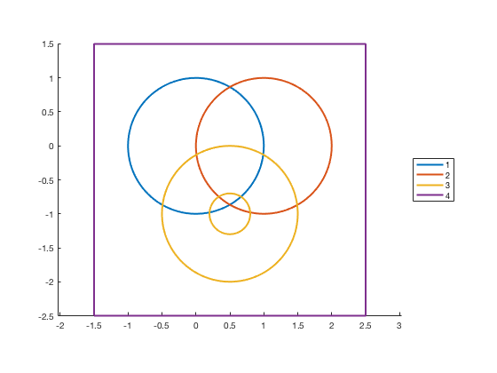
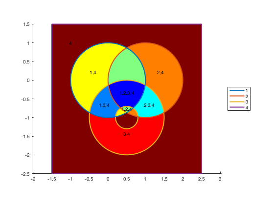

multiplepolyint.m: Calculate overlap of multiple polygons
Author: Kelly Kearney
This repository includes the code for the multiplepolyint.m Matlab function, along with all dependent functions required to run it.
This function calculates the intersection regions between multiple polygons.
Contents
Getting started
Prerequisites
This function requires either Matlab R2017b or later, or an earlier version of Matlab paired with the Mapping Toolbox.
Downloading and installation
This code can be downloaded from Github.
Matlab Search Path
The following folders need to be added to your Matlab Search path (via addpath, pathtool, etc.):
multiplepolyint-pkg/multiplepolyint
multiplepolyint-pkg/FEX-function_handle % for gpcmex option only
Syntax
[xnew, ynew, indices] = multiplepolyint(x, y) calculates the all regions of overlap between the 2D polygons defined by x and y. The polygon vertex inputs follow the Mapping Toolbox convention where clockwise contours define external contours and counterclockwise contours define internal contours (i.e. holes). x and y should be cell arrays of vectors, with one polygon per cell. xnew and ynew break the union of the input polygons into non-overlapping regions, with a corresponding array indices giving the index of the polygons that contribute to each region.
multiplepolyint(x, y, 'method', method) allows users to switch between three alternate polygon boolean options:
- polybool: uses polybool function, default for pre-2017b
- gpcmex: bypasses polybool and calls the gpcmex function directly
- polyshape: uses polyshape objects, available starting in R2017b, default for R2017b+.
Examples
We'll start with a few simple polygons: 3 circles with some overlap, and a square around them all. To make things a little more complicated, we'll put a hole in the middle of circle 3.
theta = linspace(0, 2*pi, 100); theta = theta(end:-1:1); % make clockwise x1 = cos(theta); y1 = sin(theta); x2 = x1 + 1; y2 = y1; x3 = [x1 + 0.5 NaN fliplr(x1)*0.3 + 0.5]; y3 = [y1 - 1 NaN fliplr(y1)*0.3 - 1]; x4 = [0 0 1 1 0]*4 - 1.5; y4 = [0 1 1 0 0]*4 - 2.5; x = {x1 x2 x3 x4}; y = {y1 y2 y3 y4}; hold on; axis equal; xy = [x; y]; h = plot(xy{:}, 'linewidth', 2); legend(h, cellstr(num2str((1:4)')), 'location', 'eastoutside');
We then use this function to calculate all the intersecting regions.
[xint, yint, idx] = multiplepolyint(x,y);
Plot the resulting regions, labeled by polygon
np = length(xint); col = jet(np); for ii = 1:length(xint) [f,v] = poly2fv(xint{ii}, yint{ii}); hp = patch('faces', f, 'vertices', v); set(hp, 'edgecolor', 'none', 'facecolor', col(ii,:)); str = sprintf('%d,', idx{ii}); [xc,yc] = centroid(polyshape(xint{ii},yint{ii}),1); if isequal(idx{ii}, 4) xytxt = [-1 1]; else xytxt = [xc yc]; %mean(v); end text(xytxt(1), xytxt(2), str(1:end-1), 'horiz', 'center'); end legend(h, cellstr(num2str((1:4)')), 'location', 'eastoutside'); uistack(h, 'top'); uistack(findobj('type','text'),'top');
Polygon boolean method options
I've added several different options for polygon boolean operations over the years. Earlier versions relied on polybool. But polybool at that time was pretty slow.
To speed things up, I then added the gpcmex option, which more or less replicates polybool's core without all of the input checks. In older versions of Matlab, this will be significantly faster than polybool, although as of around R2016a polybool's efficiency increased dramatically, and now the pure polybool method is often faster.
Matlab R2017b finally introduced polygon operations to the main Matlab package (rather than relegating it to the Mapping Toolbox), so I then implemented the polyshape option. If you've got a recent version of Matlab, I recommend sticking with this option; it's more stable than the gpcmex-based options (gpcmex, and therefore polybool, occasionally choke on complicated polygons, for no clear reason).
t1 = timeit(@() multiplepolyint(x,y, 'method', 'polybool')); t2 = timeit(@() multiplepolyint(x,y, 'method', 'gpcmex')); t3 = timeit(@() multiplepolyint(x,y, 'method', 'polyshape')); fprintf('Version: %s\n', version); fprintf('polybool method: %.5f sec\n', t1); fprintf('gpcmex method: %.5f sec\n', t2); fprintf('polyshape method: %.5f sec\n', t3);
Version: 9.4.0.763801 (R2018a) Prerelease polybool method: 0.02351 sec gpcmex method: 0.15001 sec polyshape method: 0.04254 sec
Contributions
Community contributions to this package are welcome!
To report bugs, please submit an issue on GitHub and include:
- your operating system
- your version of Matlab and all relevant toolboxes (type ver at the Matlab command line to get this info)
- code/data to reproduce the error or buggy behavior, and the full text of any error messages received
Please also feel free to submit enhancement requests, or to send pull requests (via GitHub) for bug fixes or new features.